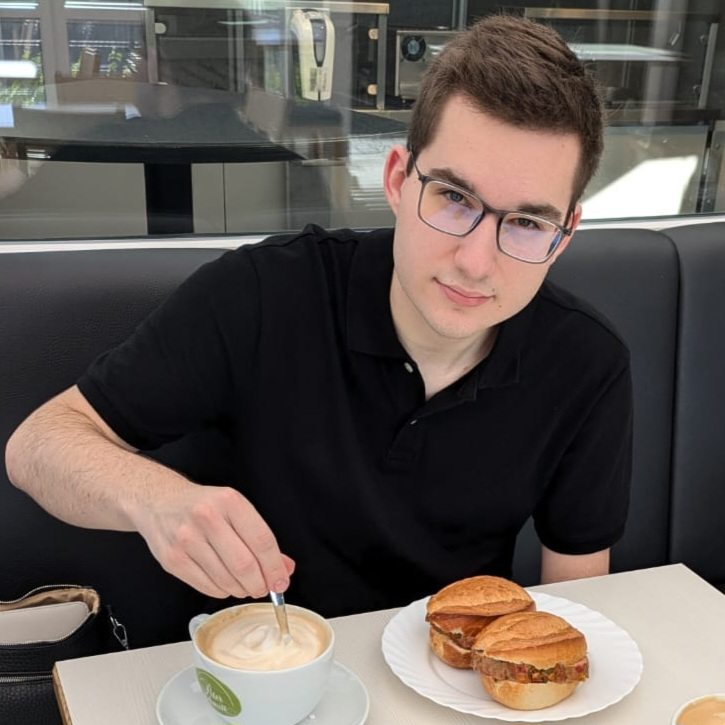

Treffen Sie
Familie Seibold
Hallöchen, ihr Lieben!
Vielleicht fragt ihr euch, was das hier sein soll? Nun, ich habe gestern (Stand: 20. März 2025) angefangen, CSS zu lernen! Nun ist mir das Lernen aber bereits zu langweilig geworden, deswegen dachte ich: Hey! Lass mich das Ganze doch einfach etwas üben! Und welchen besseren Content könnte es geben als euch?
Los geht's!
Anmerkung: Ich habe mich noch nicht wirklich mit Javascript befasst, deswegen gibt es vorerst keine interaktiven Elemente auf dieser Seite. Vielmalige Entschuldigung!
Roland Seibold (*02.07.1966)
- Alias: Domad
- Geburtsort: Bamberg, Deutschland
- Wohnort (Stand: März 2025): Strullendorf, Deutschland
- Arbeitgeber: Hans Schäfer Mode GmbH (auch: Navigazione)
- Rolle: Breadwinner
- Hobbys & Interessen: Juchheim*, Outdoor, Spielothek
- Autos im Besitz: 4
- Musikgeschmack:
- Lieblingsessen: Frankos Pizza [haha]
- Das mag ich gar nicht: Haarausfall
*Für mehr Informationen zur Juchheim-Methode klicken Sie bitte hier und sichern auch Sie sich Gesund- und Schönheit bis ins hohe Alter!
Petra Seibold (*28.02.1971)
- Alias: Homer, Mama
- Geburtsort: Bamberg, Deutschland
- Wohnort (Stand: März 2025): Rügheim*, Deutschland
- Arbeitgeber: Leopoldina Krankenhaus Schweinfurt
- Rolle: Hausmeister & Herd
- Hobbys & Interessen: Zumba, Tom Cruise, Homern
- Autos im Besitz: 1
- Musikgeschmack:
- Lieblingsessen: Schweinsbraten
- Das mag ich gar nicht: Freeloader
*Alles außer gewöhnlich! Für mehr Infos klicken Sie hier.
Max Seibold (*26.08.2002)
- Alias: /
- Geburtsort: Bamberg, Deutschland
- Wohnort (Stand: März 2025): bei Mama
- Arbeitgeber: Hans Schäfer Mode GmbH (auch: Navigazione)
- Rolle: Gesprächsführung, Disrupter of Peace
- Hobbys & Interessen: Autos, Politik, digitaler Content
- Autos im Besitz: 1
- Musikgeschmack:
- Lieblingsessen: Pizzaleberkäse, Fast Food
- Das mag ich gar nicht: weniger als 4 in einer Reihe, Kritik, Obst & Gemüse
Tina Seibold (*16.05.2005)
- Alias: der Bruder
- Geburtsort: Bamberg, Deutschland
- Wohnort (Stand: März 2025): Ningbo, China
- Arbeitgeber: not found
- Rolle: Reparaturen, Verbreiter von Weisheit
- Hobbys & Interessen: diverses Lernen, Rudolf
- Autos im Besitz: 1 [mehr oder weniger]
- Musikgeschmack:
- Lieblingsessen: Bratkartoffeln, Eier
- Das mag ich gar nicht:
Max Seibold, schlaffe Socken, Spucken
Rudolf Seibold (*01.05.2023)
- Alias: Rudi, Mercredi, Mon Amour, Mon Cher, Mon Petit
- Geburtsort: Gellershausen, Deutschland
- Wohnort (Stand: März 2025): Rügheim, Deutschland
- Arbeitgeber: HAHAHAHAHAHA
- Rolle: Verbreiter von Liebe, Hausherr
- Hobbys & Interessen: Abfucken, Weltherrschaft
- Menschen im Besitz: 6
- Musikgeschmack:
- Lieblingsessen: Eier, Hackfleisch, Feldmäuse
- Das mag ich gar nicht: Torpedo-Katze, Anweisungen, Abnehmen